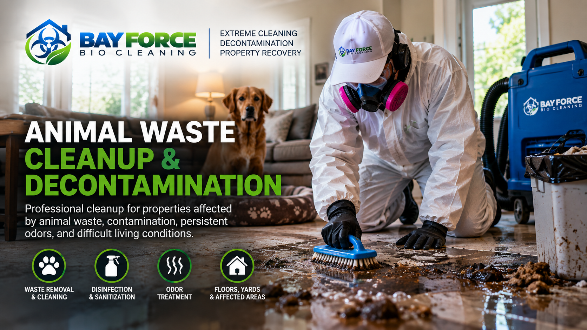

SPECIALTY CLEANING & DECONTAMINATION
Animal Waste Cleanup & Decontamination
Professional cleanup for properties affected by animal waste, contamination, persistent odors, and difficult living conditions. Bay Force Bio Cleaning helps restore affected areas to a cleaner and more manageable condition.

OUR APPROACH
Animal Waste Cleanup May Include
Animal Waste Removal
Careful cleanup and removal of animal waste and contaminated debris from affected areas.
Detailed Cleaning
Detailed cleaning of surfaces and areas affected by animal waste and contamination.
HEPA Filtration
HEPA filtration equipment may be used when appropriate to help manage airborne particles during specialized cleanup.
Professional Decontamination
Cleaning and decontamination using professional products and procedures appropriate to the conditions encountered.
Odor Treatment
Additional odor-treatment options may be available for properties affected by persistent or severe odors.
Property Recovery
Our goal is to help return affected areas to a cleaner, safer and more manageable condition.
THE BAY FORCE PROCESS
A Professional Approach to Animal Waste Cleanup
1. Evaluate
We review the affected areas and determine the appropriate cleanup approach.
2. Protect
Appropriate protective equipment and cleaning procedures are used based on property conditions.
3. Clean & Decontaminate
Affected areas are cleaned and decontaminated according to the conditions encountered.
4. Recover
We work to leave the affected area cleaner and more manageable.
SERVING THE NORTH BAY & SAN FRANCISCO
Animal Waste Cleanup Across Our Service Area
Bay Force Bio Cleaning provides specialized animal waste cleanup and decontamination services throughout Sonoma County, Marin County, Napa County and San Francisco.
Sonoma County • Marin County • Napa County • San Francisco
A VARCAL COMPANY
Need Help With Animal Waste Cleanup?
Tell us about the property and the conditions you are dealing with. Our team can review the information and help determine the appropriate next step.